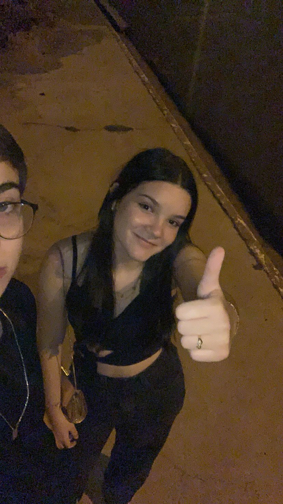
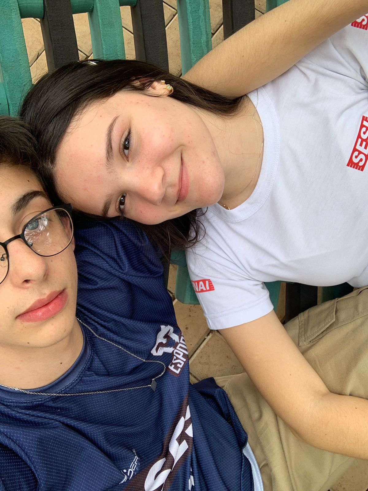
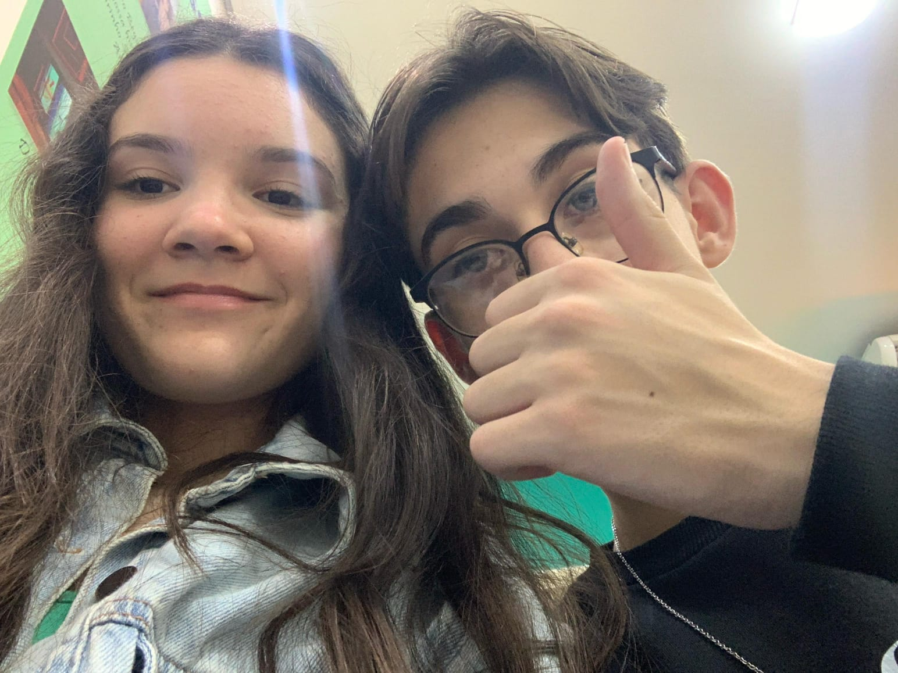
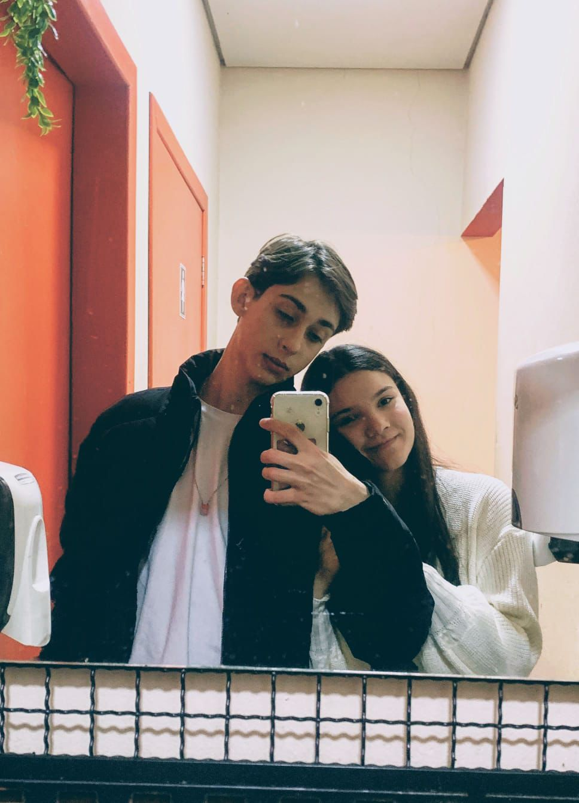
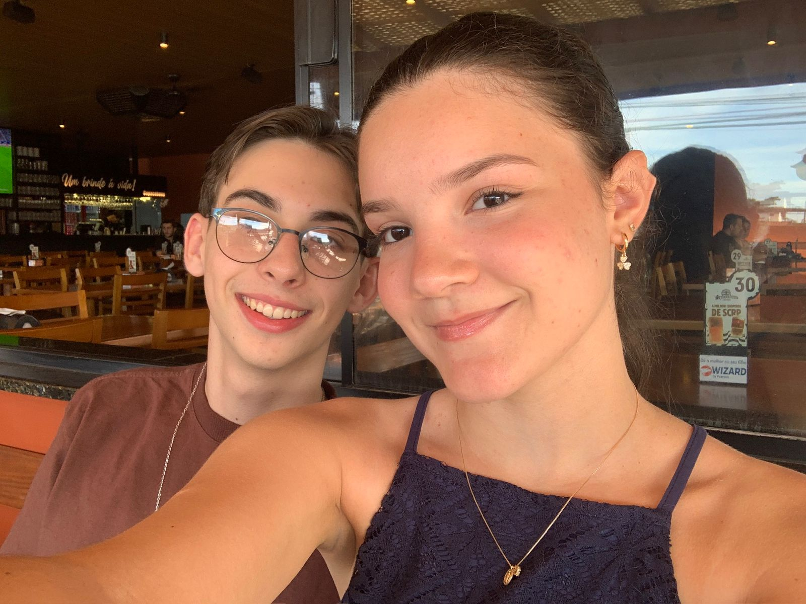
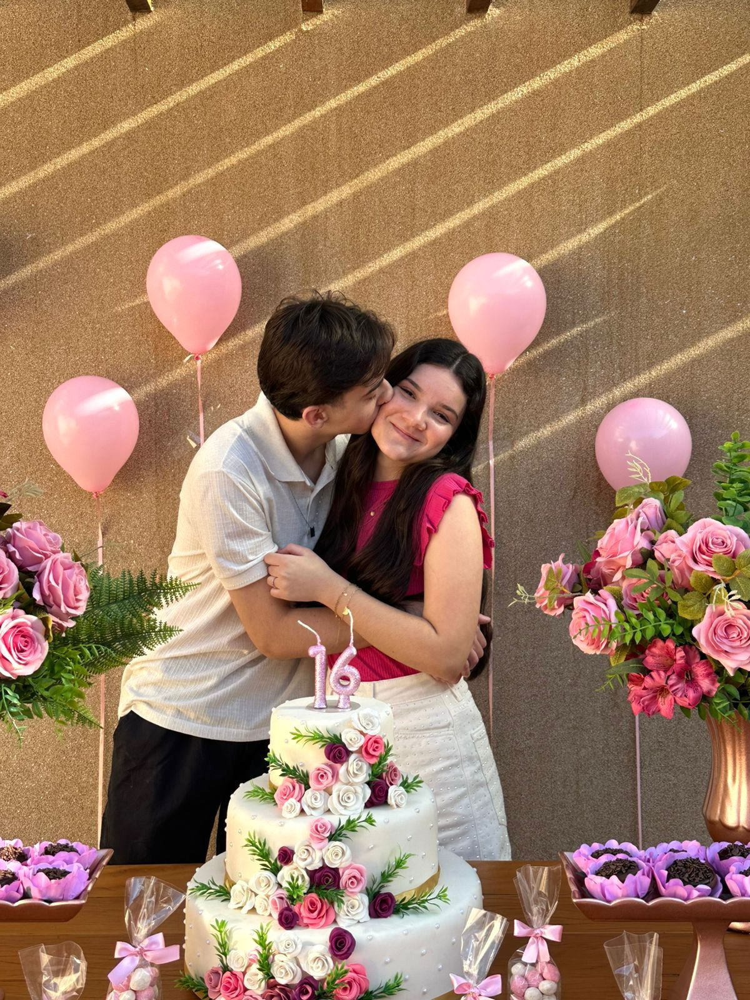
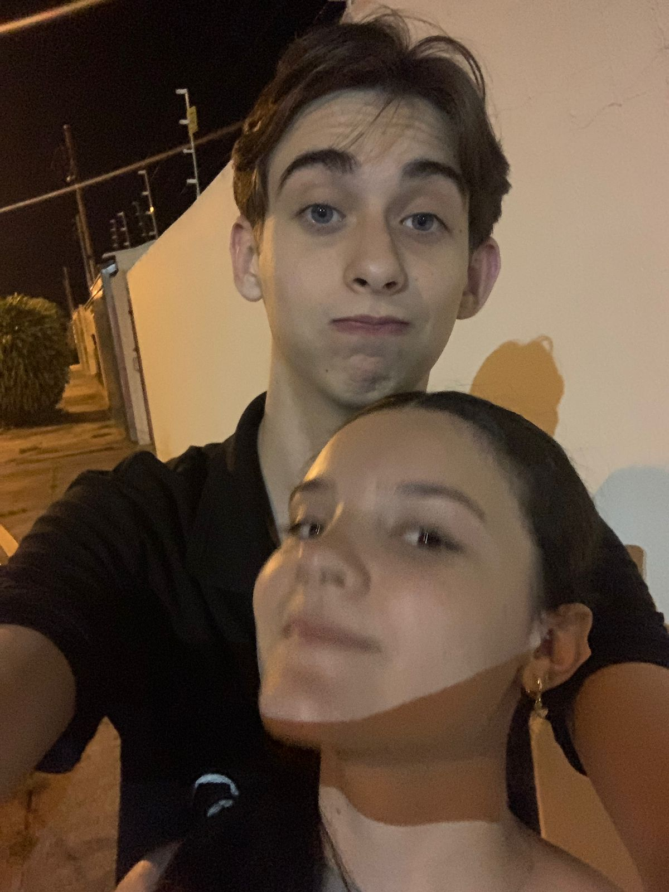

Cada foto guarda um momento. Cada momento guarda um pedaço de nós.

❤️Nosso Primeiro Encontro❤️
❤️O Verdadeiro Começo❤️
❤️Primeira comemoração❤️
❤️O Amor Reina❤️
❤️O Momento❤️
Você ❤️
💌 Leia por último